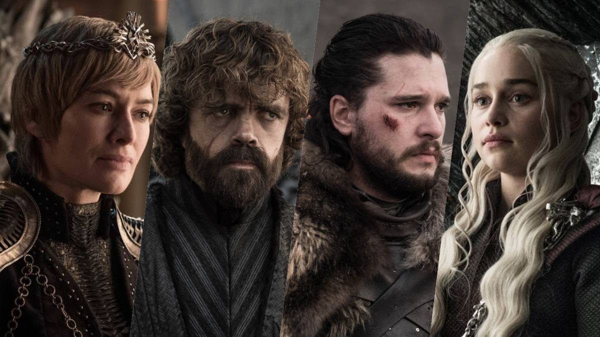

Game of Thrones, titulada en español Juego de Tronos, es una serie de televisión estadounidense de fantasía medieval creada por David Benioff y D. B. Weiss para la cadena HBO. Está basada en la serie de novelas Canción de Hielo y Fuego del escritor George R. R. Martin y su trama se centra en las violentas luchas dinásticas entre varias familias nobles por el control del Trono de Hierro del continente de Poniente.
La serie fue estrenada el 17 de abril de 2011 en Estados Unidos, el 8 de mayo en Latinoamérica y un día después en España a través de Canal+. A partir de julio de 2012 se estrenó la serie, en abierto, a través de Antena 3. El episodio final de la serie fue emitido el 19 de mayo de 2019.
El 29 de octubre de 2019 se anunció que HBO había ordenado la grabación de una serie precuela titulada House of the Dragon, basada en el libro Fuego y Sangre del escritor George R. R. Martin. El primer y el segundo borradores del guión del episodio piloto, escritos por Benioff y Weiss, fueron presentados a la HBO en agosto de 2007 y junio de 2008, respectivamente. Aunque la cadena encontró ambos borradores de su gusto, el episodio no fue aprobado hasta noviembre de 2008. La huelga de guionistas en Hollywood de 2007-2008 posiblemente retrasó el proceso.
Game of Thrones sigue las múltiples líneas argumentales de Canción de Hielo y Fuego. La mayor parte de la historia tiene lugar en Poniente, un continente ficticio donde las estaciones pueden durar años, y se centra en las violentas luchas dinásticas que surgen entre varias familias nobiliarias por el control del Trono de Hierro.
La primera temporada está basada en la primera novela de la saga, Juego de Tronos, que además da nombre a la serie. Su trama transcurre quince años después de la guerra civil conocida como la Rebelión de Robert o la Guerra del Usurpador, en la que Robert I Baratheon expulsó del Trono de Hierro a los Targaryen y se proclamó rey de los Siete Reinos de Poniente.
Al otro lado del mar, el heredero al trono exiliado, Viserys Targaryen, casa a su hermana Daenerys con el líder de los Dothraki, Khal Drogo, para formar una alianza que le permita recuperar el Trono de Hierro. En el norte, como tercer hilo argumental, un inmenso Muro custodiado por la Guardia de la Noche separa el continente de Poniente de los territorios del exterior, en los cuales se empiezan a suceder una serie de extraños acontecimientos, acrecentados por la llegada del invierno.
El escritor George R. R. Martin, autor de la serie de novelas Canción de Hielo y Fuego, recibió un par de propuestas para llevar su obra a la gran pantalla. Él se negó al considerar que, por su extensión, no podría adaptarse bien a una película. También sopesó la posibilidad de realizar una serie de televisión, pero las numerosas escenas de sexo y violencia supondrían un problema y creyó que HBO era la única solución.